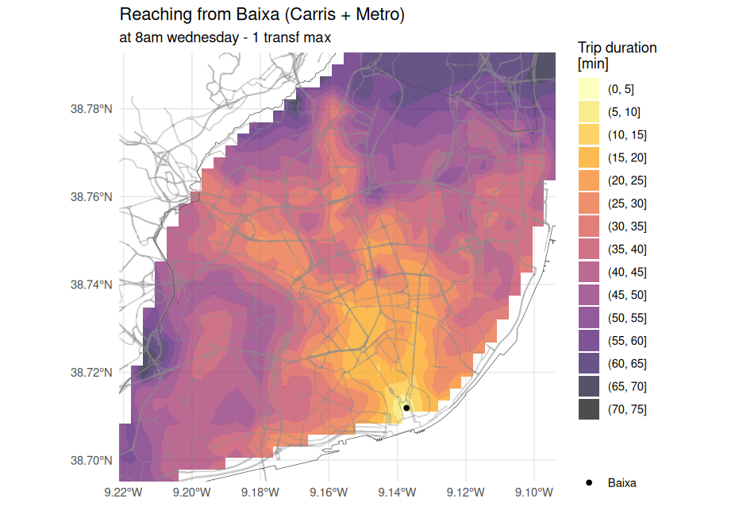
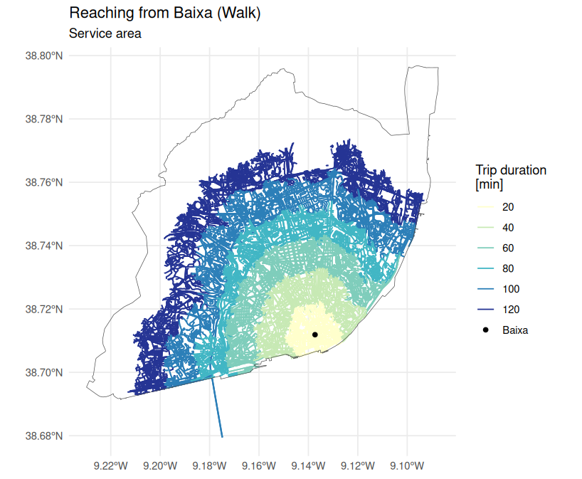
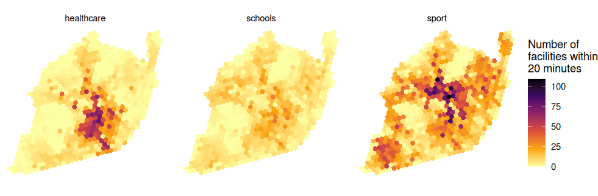
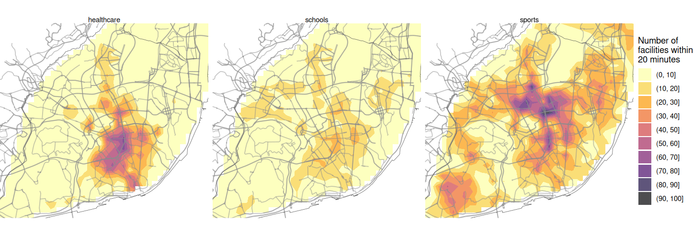
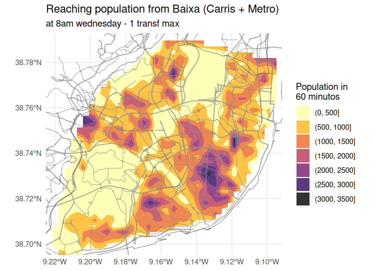

# load packages
library(tidyverse)
library(sf)
options(java.parameters = '-Xmx8G') # RAM to 8GB
library(r5r)
library(interp)Accessibility
Urban accessibility is defined as how easily people can reach opportunities (jobs, education, services) given the spatial layout of populations, transport networks, and land use.
It contrasts with mobility (how people move).
Planning should shift focus from maximizing movement to maximizing access (R. H. Pereira and Herszenhut 2023).
👉 In this exercises we will adapt from r5r vignettes “Isochrones” and “Accessibility” (R. H. M. Pereira et al. 2021)
Isochrones
Based on GTFS data from Metro and Carris, we will estimate isochrones and accessibility for the population in Lisbon, starting from downtown (Baixa).
# load data
# Destinations
POINTS = readRDS(url("https://github.com/U-Shift/Traffic-Simulation-Models/releases/download/2025/GRIDhex_data_lx.rds"))
# POINTS = readRDS("data/Lisbon/GRIDhex_data.rds")
POINTS = st_drop_geometry(POINTS) |>
mutate(id = as.character(id)) # avoids warnings
# Create origin point - Baixa / Downtown
BAIXA = data.frame(id = "1", lat = 38.711884, lon = -9.137313) |>
st_as_sf(coords = c('lon', 'lat'), crs = 4326)
BAIXA$lon = st_coordinates(BAIXA)[,1]
BAIXA$lat = st_coordinates(BAIXA)[,2]
# Road network major roads
road_network_base = st_read("https://github.com/U-Shift/Traffic-Simulation-Models/releases/download/2025/REDEbase_Lx.gpkg")
# City limit
city_limit = st_read("https://github.com/U-Shift/Traffic-Simulation-Models/releases/download/2025/Lisboa_lim.gpkg")r5r_lisboa = build_network(data_path = "data/Lisbon/r5r/") # already existing network modelPublic Transit
On a Wednesday at 8:00 a.m., how long will it take me to get from downtown using the subway and bus, with 1 transfer allowed?
# define some parameters
mode = c("SUBWAY", "BUS") # TRANSIT, BUS, SUBWAY, RAIL, CAR, FERRY, WALK, BIKE, TRAM
mode_egress = "WALK" # can be BIKE
max_walk_time = 10 # in minutes
max_trip_duration = 90 # in minutes
time_window = 120 # in minutes
time_intervals <- seq(0, 100, 10)
departure_datetime_HP = as.POSIXct("20-11-2024 8:00:00", format = "%d-%m-%Y %H:%M:%S") # quarta-feira
# calculate travel time matrix
ttm_zer_HP_PT = travel_time_matrix(r5r_network = r5r_lisboa,
origins = BAIXA,
destinations = POINTS,
mode = mode,
mode_egress = mode_egress,
departure_datetime = departure_datetime_HP,
max_walk_time = max_walk_time,
max_trip_duration = max_trip_duration,
time_window = time_window,
max_rides = 2, # max 1 transfer
verbose = FALSE)
summary(ttm_zer_HP_PT$travel_time_p50) Min. 1st Qu. Median Mean 3rd Qu. Max.
1.0 30.0 38.0 37.7 45.0 77.0 # add coordinates of destinations to travel time matrix
ttm_zer_HP_PT = ttm_zer_HP_PT |>
left_join(POINTS, by = c("to_id" = "id"))
# interpolate estimates to get spatially smooth result
travel_times.interp <- with(na.omit(ttm_zer_HP_PT), interp(lon, lat, travel_time_p50)) |>
with(cbind(travel_time=as.vector(z), # Column-major order
x=rep(x, times=length(y)),
y=rep(y, each=length(x)))) |>
as.data.frame() |> na.omit()Code
# find isochrone's bounding box to crop the map below
bb_x <- c(min(travel_times.interp$x), max(travel_times.interp$x))
bb_y <- c(min(travel_times.interp$y), max(travel_times.interp$y))
# plot
plotHP = ggplot(travel_times.interp) +
geom_contour_filled(aes(x = x, y = y, z = travel_time), alpha = .7) +
geom_sf(data = road_network_base, color = "gray55", lwd = 0.5, alpha = 0.4) +
geom_sf(data = city_limit, fill = "transparent", color = "grey30") +
geom_point(aes(x = lon, y = lat, color = 'Baixa'), data = BAIXA) +
scale_fill_viridis_d(direction = -1, option = 'B') +
scale_color_manual(values = c('Baixa' = 'black')) +
scale_x_continuous(expand = c(0, 0)) +
scale_y_continuous(expand = c(0, 0)) +
coord_sf(xlim = bb_x, ylim = bb_y) +
labs(
title = "Reaching from Baixa (Carris + Metro)",
subtitle = "at 8am wednesday - 1 transf max",
fill = "Trip duration \n[min]",
color = ''
) +
theme_minimal() +
theme(axis.title = element_blank())
plotHP
Car
mode = "CAR"
# calculate travel time matrix
ttm_zer_HP_car = travel_time_matrix(r5r_network = r5r_lisboa,
origins = BAIXA,
destinations = POINTS,
mode = mode,
mode_egress = mode_egress,
departure_datetime = departure_datetime_HP,
max_walk_time = max_walk_time, # irrelevant
max_trip_duration = max_trip_duration,
time_window = time_window, # irrelevant
verbose = FALSE)
summary(ttm_zer_HP_car$travel_time_p50) Min. 1st Qu. Median Mean 3rd Qu. Max.
2.00 11.00 13.00 12.87 15.00 34.00Code
# add coordinates of destinations to travel time matrix
ttm_zer_HP_car = ttm_zer_HP_car |>
left_join(POINTS, by = c("to_id" = "id"))
# interpolate estimates to get spatially smooth result
travel_times.interp <- with(na.omit(ttm_zer_HP_car), interp(lon, lat, travel_time_p50)) |>
with(cbind(travel_time=as.vector(z), # Column-major order
x=rep(x, times=length(y)),
y=rep(y, each=length(x)))) |>
as.data.frame() |> na.omit()
# plot
# find isochrone's bounding box to crop the map below
bb_x <- c(min(travel_times.interp$x), max(travel_times.interp$x))
bb_y <- c(min(travel_times.interp$y), max(travel_times.interp$y))
# plot
plotHP_car = ggplot(travel_times.interp) +
geom_contour_filled(aes(x = x, y = y, z = travel_time), alpha = .7) +
geom_sf(data = road_network_base, color = "gray55", lwd = 0.5, alpha = 0.4) +
geom_sf(data = city_limit, fill = "transparent", color = "grey30") +
geom_point(aes(x = lon, y = lat, color = 'Baixa'), data = BAIXA) +
scale_fill_viridis_d(direction = -1, option = 'B') +
scale_color_manual(values = c('Baixa' = 'black')) +
scale_x_continuous(expand = c(0, 0)) +
scale_y_continuous(expand = c(0, 0)) +
coord_sf(xlim = bb_x, ylim = bb_y) +
labs(
title = "Reaching from Baixa (Car)",
subtitle = "at 8am wednesday",
fill = "Trip duration \n[min]",
color = ''
) +
theme_minimal() +
theme(axis.title = element_blank())
plotHP_carBike
mode = "BICYCLE"
max_lts = 3
# calculate travel time matrix
ttm_zer_HP_bike = travel_time_matrix(r5r_network = r5r_lisboa,
origins = BAIXA,
destinations = POINTS,
mode = mode,
max_lts = max_lts,
mode_egress = mode_egress, # irrelevant
departure_datetime = departure_datetime_HP, # irrelevant
max_walk_time = max_walk_time, # irrelevant
max_trip_duration = max_trip_duration,
time_window = time_window, # irrelevant
verbose = FALSE)
summary(ttm_zer_HP_bike$travel_time_p50) Min. 1st Qu. Median Mean 3rd Qu. Max.
0.00 29.00 41.00 38.96 50.00 76.00 Code
# add coordinates of destinations to travel time matrix
ttm_zer_HP_bike = ttm_zer_HP_bike |>
left_join(POINTS, by = c("to_id" = "id"))
# interpolate estimates to get spatially smooth result
travel_times.interp <- with(na.omit(ttm_zer_HP_bike), interp(lon, lat, travel_time_p50)) |>
with(cbind(travel_time=as.vector(z), # Column-major order
x=rep(x, times=length(y)),
y=rep(y, each=length(x)))) |>
as.data.frame() |> na.omit()
# plot
# find isochrone's bounding box to crop the map below
bb_x <- c(min(travel_times.interp$x), max(travel_times.interp$x))
bb_y <- c(min(travel_times.interp$y), max(travel_times.interp$y))
# plot
plotHP_car = ggplot(travel_times.interp) +
geom_contour_filled(aes(x = x, y = y, z = travel_time), alpha = .7) +
geom_sf(data = road_network_base, color = "gray55", lwd = 0.5, alpha = 0.4) +
geom_sf(data = city_limit, fill = "transparent", color = "grey30") +
geom_point(aes(x = lon, y = lat, color = 'Baixa'), data = BAIXA) +
scale_fill_viridis_d(direction = -1, option = 'B') +
scale_color_manual(values = c('Baixa' = 'black')) +
scale_x_continuous(expand = c(0, 0)) +
scale_y_continuous(expand = c(0, 0)) +
coord_sf(xlim = bb_x, ylim = bb_y) +
labs(
title = "Reaching from Baixa (Bike)",
subtitle = "at 8am wednesday - max LTS 3",
fill = "Trip duration \n[min]",
color = ''
) +
theme_minimal() +
theme(axis.title = element_blank())
plotHP_carEasier approach
There are other ways of making these maps, but with lower details, such as no destinations. See r5r::isochrones() function.
This function also allows to find service areas.
# estimate line-based isochrone from origin
iso_lines = isochrone(
r5r_network = r5r_lisboa,
origins = BAIXA,
mode = "walk",
polygon_output = FALSE,
departure_datetime = departure_datetime_HP,
cutoffs = seq(0, 120, 20)
)Code
# plot
# used cols4all::c4a_gui()
colors <- c('#FFFFCC','#C7E9B4', '#7FCDBB','#41B6C4','#2C7FB8','#253494','black')
# last one for the origin point
ggplot() +
geom_sf(data = iso_lines, aes(color=factor(isochrone))) +
geom_sf(data = city_limit, fill = "transparent", color = "grey30") +
geom_point(aes(x = lon, y = lat, color = 'Baixa'), data = BAIXA) +
scale_color_manual(values = colors) +
labs(
title = "Reaching from Baixa (Walk)",
subtitle = "Service area",
color = "Trip duration \n[min]"
) +
theme_minimal() +
theme(axis.title = element_blank())
Accessibility
Let’s see the accessibility from population to schools, healthcare and sport, using public transit.
We first need to create a travel time matrix, using only PT.
# calculate travel time matrix
ttm_PT <- r5r::travel_time_matrix(
r5r_network = r5r_lisboa,
origins = POINTS,
destinations = POINTS,
mode = "TRANSIT",
departure_datetime = departure_datetime_HP,
max_walk_time = max_walk_time,
time_window = time_window,
progress = FALSE
)Now calculate a traditional cumulative opportunity metric and pass our travel time matrix and land use data (schools, healthcare, and sport - see POIs) as input.
# calculate accessibility
access_edu <- accessibility::cumulative_cutoff(
travel_matrix = ttm_PT,
land_use_data = POINTS,
opportunity = 'school',
travel_cost = 'travel_time_p50',
cutoff = 20
)
access_health <- accessibility::cumulative_cutoff(
travel_matrix = ttm_PT,
land_use_data = POINTS,
opportunity = 'healthcare',
travel_cost = 'travel_time_p50',
cutoff = 20
)
access_sport <- accessibility::cumulative_cutoff(
travel_matrix = ttm_PT,
land_use_data = POINTS,
opportunity = 'sport',
travel_cost = 'travel_time_p50',
cutoff = 20
)
# join them
access1 = access_edu |>
mutate(opportunity = "schools") |>
rename(accessibility = school) |>
rbind(
access_health |>
mutate(opportunity = "healthcare") |>
rename(accessibility = healthcare)
) |>
rbind(
access_sport |>
mutate(opportunity = "sport") |>
rename(accessibility = sport)
) |>
mutate(id = as.integer(id))The results will tell us how many times each school can be reached from all origins.
We can use our grid directly to visualize results
Code
# merge accessibility estimates
access_sf <- left_join(GRID, access1, by = c('id'))
# plot
ggplot() +
geom_sf(data = access_sf, aes(fill = accessibility), color= NA) +
scale_fill_viridis_c(direction = -1, option = 'B') +
labs(fill = "Number of\nfacilities within\n20 minutes") +
theme_minimal() +
theme(axis.title = element_blank()) +
facet_wrap(~opportunity) + # each plot filtered by this variable
theme_void()
If the facilities are more concentrated in an area, those will provide more opportunities to the residents of that area (who can reach more opportunities without making long trips).
Spatial interpolation
# interpolate estimates to get spatially smooth result
access_schools <- access1 %>%
filter(opportunity == "schools") %>%
inner_join(POINTS |> mutate(id = as.integer(id)), by='id') %>%
with(interp::interp(lon, lat, accessibility)) %>%
with(cbind(acc=as.vector(z), # Column-major order
x=rep(x, times=length(y)),
y=rep(y, each=length(x)))) %>% as.data.frame() %>% na.omit() %>%
mutate(opportunity = "schools")
access_health <- access1 %>%
filter(opportunity == "healthcare") %>%
inner_join(POINTS |> mutate(id = as.integer(id)), by='id') %>%
with(interp::interp(lon, lat, accessibility)) %>%
with(cbind(acc=as.vector(z), # Column-major order
x=rep(x, times=length(y)),
y=rep(y, each=length(x)))) %>% as.data.frame() %>% na.omit() %>%
mutate(opportunity = "healthcare")
access_sports <- access1 %>%
filter(opportunity == "sport") %>%
inner_join(POINTS |> mutate(id = as.integer(id)), by='id') %>%
with(interp::interp(lon, lat, accessibility)) %>%
with(cbind(acc=as.vector(z), # Column-major order
x=rep(x, times=length(y)),
y=rep(y, each=length(x)))) %>% as.data.frame() %>% na.omit() %>%
mutate(opportunity = "sports")
access.interp <- rbind(access_schools, access_health, access_sports)
# plot
ggplot(na.omit(access.interp)) +
geom_contour_filled(aes(x=x, y=y, z=acc), alpha=.7) +
geom_sf(data = road_network_base, color = "gray55", lwd=0.5, alpha = 0.5) +
geom_sf(data = city_limit, fill = "transparent", color = "grey30") +
scale_fill_viridis_d(direction = -1, option = 'B') +
scale_x_continuous(expand=c(0,0)) +
scale_y_continuous(expand=c(0,0)) +
coord_sf(xlim = bb_x, ylim = bb_y, datum = NA) +
labs(fill = "Number of\nfacilities within\n20 minutes") +
theme_void() +
facet_wrap(~opportunity)
Population estimate
We can also estimate population reach from downtown with PTransit (1 transfer, peak hour)
Code
# calculate population accessible
access <- ttm_zer_HP_PT |> # estimaded before!
filter(travel_time_p50 <= 60) |> # keep trips within 30 minutes
group_by(to_id) |>
summarise(acc = sum(residents), .groups = "drop")
access = left_join(access, ttm_zer_HP_PT)
# interpolate estimates to get spatially smooth result
access.interp = access |>
with(interp(lon, lat, acc)) |>
with(cbind(acc=as.vector(z), # Column-major order
x=rep(x, times=length(y)),
y=rep(y, each=length(x)))) |> as.data.frame() |> na.omit()
# plot
ggplot(na.omit(access.interp)) +
geom_contour_filled(aes(x=x, y=y, z=acc), alpha=.8) +
geom_sf(data = road_network_base, color = "gray55", lwd=0.5, alpha = 0.5) +
geom_sf(data = city_limit, fill = "transparent", color = "grey30") +
scale_fill_viridis_d(direction = -1, option = 'B') +
scale_x_continuous(expand=c(0,0)) +
scale_y_continuous(expand=c(0,0)) +
coord_sf(xlim = bb_x, ylim = bb_y) +
labs(
title = "Reaching population from Baixa (Carris + Metro)",
subtitle = "at 8am wednesday - 1 transf max",
fill = "Population in\n60 minutos") +
theme_minimal() +
theme(axis.title = element_blank())
How many residents can reach downtown in 15, 30, 45 and 60 minutes?
poplisboa = sum(POINTS$residents) #
100* sum(access$residents[access$travel_time_p50 <= 15]) / poplisboa # 2.5%
100* sum(access$residents[access$travel_time_p50 <= 30]) / poplisboa # 38.6%
100* sum(access$residents[access$travel_time_p50 <= 45]) / poplisboa # 84.8%
100* sum(access$residents[access$travel_time_p50 <= 60]) / poplisboa # 97.3%| Trip duration (up to…) |
Residents |
|---|---|
| 15 min | 2.5 % |
| 30 min | 38.6 % |
| 45 min | 84.8% |
| 60 min | 97.3% |
Other accessibility measures
Stop r5r model
r5r::stop_r5(r5r_lisboa)
rJava::.jgc(R.gc = TRUE)References
Pereira, Rafael H. M., Marcus Saraiva, Daniel Herszenhut, Carlos Kaue Vieira Braga, and Matthew Wigginton Conway. 2021. “R5r: Rapid Realistic Routing on Multimodal Transport Networks with r ⁵ in r.” Findings, March. https://doi.org/10.32866/001c.21262.
Pereira, Rafael HM, and Daniel Herszenhut. 2023. Introduction to Urban Accessibility: A Practical Guide with r. Instituto de Pesquisa Econômica Aplicada (Ipea). https://ipeagit.github.io/intro_access_book/.